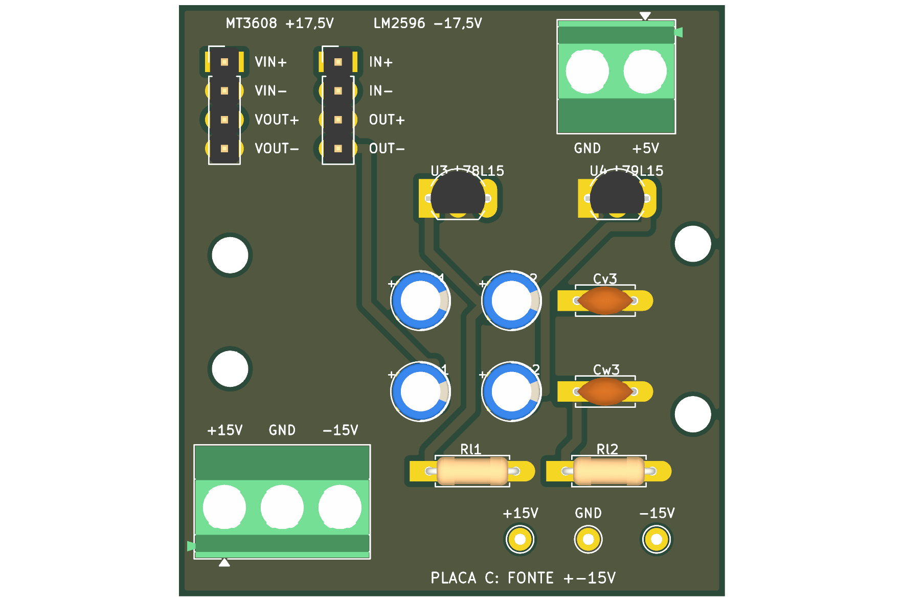
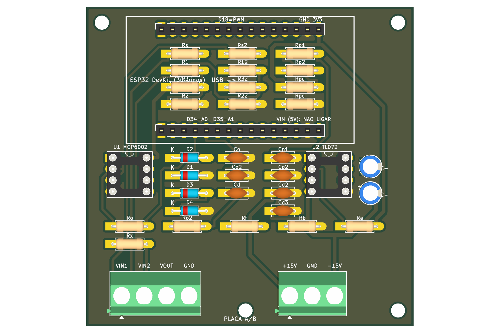

Bill of materialsLista de componentes
Board C: ±15 V supply (48 × 52 mm)Placa C: fonte de ±15 V (48 × 52 mm)

| ✓ | QtyQtd | PartPeça | ValueValor | ReferencesReferências | NotesObservações |
|---|---|---|---|---|---|
| 2 | Resistor 1/4 WResistor 1/4 W | 2 kΩ | Rl1, Rl2 | test loads of the supplycargas de teste da fonte | |
| 2 | Ceramic capacitorCapacitor cerâmico | 100 nF | Cv3, Cw3 | no polaritysem polaridade | |
| 4 | Electrolytic capacitorCapacitor eletrolítico | 10 µF / 25 V | Cv1, Cv2, Cw1, Cw2 | polarity: follow the + printed on the board (on the negative rail the + goes to GND, the board already shows it)polaridade: siga o + impresso na placa (na trilha negativa o + vai ao GND, a placa já mostra) | |
| 1 | Regulator L78L15 (TO-92)Regulador L78L15 (TO-92) | +15 V | U3 | flat face matches the silkscreen; pinout: OUT | GND | INface plana igual à serigrafia; pinagem: OUT | GND | IN | |
| 1 | Regulator L79L15 (TO-92)Regulador L79L15 (TO-92) | −15 V | U4 | flat face matches the silkscreen; pinout: GND | IN | OUTface plana igual à serigrafia; pinagem: GND | IN | OUT | |
| 1 | Screw terminal 5.08 mm, 3 polesBorne de parafuso 5,08 mm, 3 polos | KRE / KF301 | J3 | +15 V, GND, −15 V (to board A/B); wire entry towards the board edge+15 V, GND, −15 V (para a placa A/B); entrada do fio voltada para a borda | |
| 1 | Screw terminal 5.08 mm, 2 polesBorne de parafuso 5,08 mm, 2 polos | KRE / KF301 | JP | +5 V and GND from the charger; wire entry towards the board edge+5 V e GND do carregador; entrada do fio voltada para a borda | |
| 2 | Male pin header 1×4, 2.54 mmBarra de pinos macho 1×4, 2,54 mm | MT, LM | short wires to the MT3608 and LM2596 modulesfios curtos para os módulos MT3608 e LM2596 | ||
| 3 | Test point / pinPonto de teste / pino | TPp, TPg, TPn | +15 V, GND, −15 V+15 V, GND, −15 V |
Board A/B: inputs, ESP32 and output (74 × 72 mm)Placa A/B: entradas, ESP32 e saída (74 × 72 mm)

| ✓ | QtyQtd | PartPeça | ValueValor | ReferencesReferências | NotesObservações |
|---|---|---|---|---|---|
| 4 | Resistor 1/4 WResistor 1/4 W | 10 kΩ | Rs, Rs2, Rp1, Rp2 | ||
| 4 | Resistor 1/4 WResistor 1/4 W | 20 kΩ | R2, R3, R22, R32 | ||
| 4 | Resistor 1/4 WResistor 1/4 W | 100 kΩ | R1, R12, Rpd, Rpu | ||
| 3 | Resistor 1/4 WResistor 1/4 W | 1 kΩ | Ro, Ro2, Rb | ||
| 1 | Resistor 1/4 WResistor 1/4 W | 2.2 kΩ | Rf | ||
| 1 | Resistor 1/4 WResistor 1/4 W | 680 Ω | Ra | ||
| 1 | Resistor 1/4 WResistor 1/4 W | 47 Ω | Rx | output series resistorresistor em série da saída | |
| 4 | Schottky diode BAT81 (DO-35)Diodo Schottky BAT81 (DO-35) | D1, D2, D3, D4 | polarity: the stripe is the cathode and goes to the side marked Kpolaridade: a faixa é o catodo e vai para o lado marcado K | ||
| 7 | Ceramic capacitorCapacitor cerâmico | 100 nF | Cd, Cd2, Cd3, Co, Co2, Cp1, Cp2 | no polaritysem polaridade | |
| 2 | Electrolytic capacitorCapacitor eletrolítico | 10 µF / 25 V | C+, C− | polarity: follow the + printed on the board (C− sits on the −15 V rail: its + goes to GND, the board already shows it)polaridade: siga o + impresso na placa (C− fica na trilha de −15 V: o + vai ao GND, a placa já mostra) | |
| 1 | DIP-8 socket + MCP6002-I/PSoquete DIP-8 + MCP6002-I/P | U1 | socket notch matches the silkscreen; insert the chip only after the supply testo entalhe do soquete é o da serigrafia; coloque o CI só depois do teste da fonte | ||
| 1 | DIP-8 socket + TL072Soquete DIP-8 + TL072 | U2 | same as U1igual ao U1 | ||
| 2 | Female socket strip 1×15, 2.54 mmBarra de soquetes fêmea 1×15, 2,54 mm | J4, J5 | for the ESP32 DevKit (30 pins); see the tip on alignmentpara o ESP32 DevKit (30 pinos); veja a dica de alinhamento | ||
| 1 | Screw terminal 5.08 mm, 4 polesBorne de parafuso 5,08 mm, 4 polos | KRE / KF301 | J1 | VIN1, VIN2, VOUT, GND; wire entry towards the board edgeVIN1, VIN2, VOUT, GND; entrada do fio voltada para a borda | |
| 1 | Screw terminal 5.08 mm, 3 polesBorne de parafuso 5,08 mm, 3 polos | KRE / KF301 | J3 | +15 V, GND, −15 V (from board C)+15 V, GND, −15 V (vindos da placa C) |
Other parts (not on the boards)Outros itens (fora das placas)
| ✓ | ItemItem | QtyQtd | NotesObservações |
|---|---|---|---|
| ESP32 DevKit, 30 pinsESP32 DevKit, 30 pinos | 1 | plugs into J4 and J5; its VIN pin is never connectedencaixa em J4 e J5; o pino VIN dele nunca é ligado | |
| Module MT3608 (step-up)Módulo MT3608 (step-up) | 1 | adjusted to +17.5 Vajustado em +17,5 V | |
| Module LM2596 adjustable (4 terminals: IN+, IN−, OUT+, OUT−)Módulo LM2596 ajustável (4 terminais: IN+, IN−, OUT+, OUT−) | 1 | used as inverter, adjusted to −17.5 Vusado como inversor, ajustado em −17,5 V | |
| 5 V wall charger, ≥ 1 A, with the USB cable cutCarregador de parede de 5 V, ≥ 1 A, com o cabo USB cortado | 1 | red = +5 V, black = GNDvermelho = +5 V, preto = GND | |
| USB cable for the ESP32Cabo USB do ESP32 | 1 | power and serialalimentação e serial | |
| Flexible wireFio flexível | — | C → A/B (3 wires) and modules → C (8 short wires of ≈ 10 cm)C → A/B (3 fios) e módulos → C (8 fios curtos de ≈ 10 cm) | |
| M3 standoffs 6 mm + M3 screwsEspaçadores M3 de 6 mm + parafusos M3 | 8 + 8 | 4 holes on each board4 furos em cada placa |
Resistor colour codesCódigo de cores dos resistores
| ValueValor | 4-band code (5 %)Código de 4 faixas (5 %) |
|---|---|
| 47 Ω | yellow · violet · black · goldamarelo · violeta · preto · dourado |
| 680 Ω | blue · grey · brown · goldazul · cinza · marrom · dourado |
| 1 kΩ | brown · black · red · goldmarrom · preto · vermelho · dourado |
| 2 kΩ | red · black · red · goldvermelho · preto · vermelho · dourado |
| 2.2 kΩ | red · red · red · goldvermelho · vermelho · vermelho · dourado |
| 10 kΩ | brown · black · orange · goldmarrom · preto · laranja · dourado |
| 20 kΩ | red · black · orange · goldvermelho · preto · laranja · dourado |
| 100 kΩ | brown · black · yellow · goldmarrom · preto · amarelo · dourado |